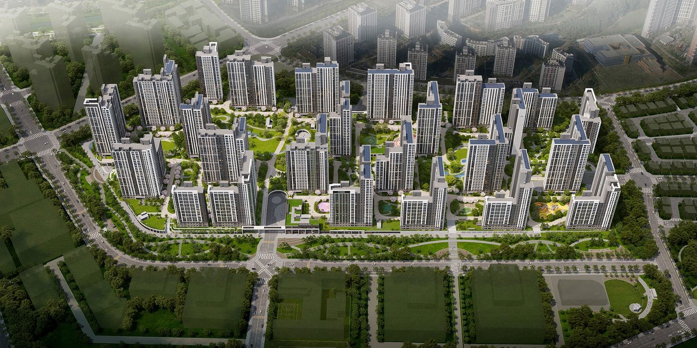
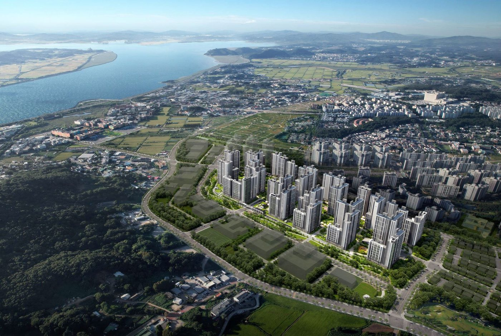
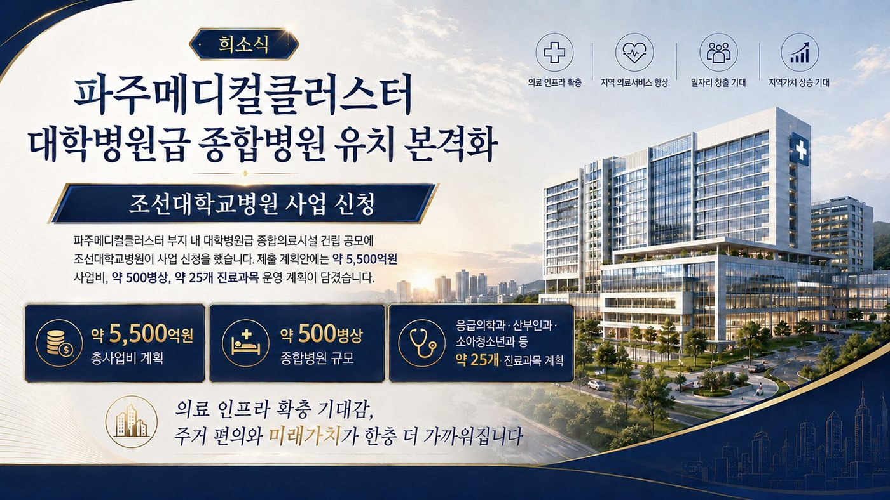
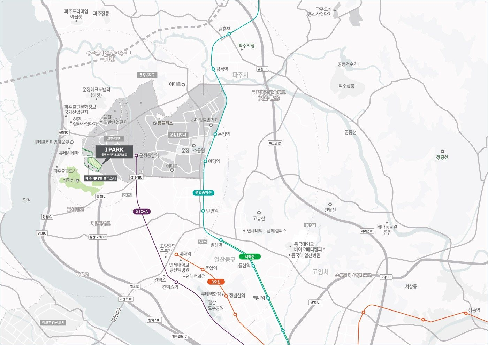
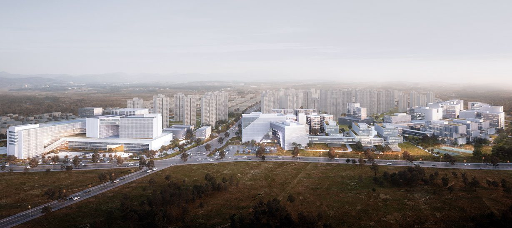

UNJEONG IPARK FOREST
운정 아이파크
포레스트
파주 최대 3,250세대 · 지상 29층 25개 동숲의 도시에서 누리는 랜드마크GRAND FOREST LIFE84타입 5억대 · 계약금 1천만원
건축규모지하 2층 ~ 지상 29층
세대수총 3,250세대
전용면적63~197㎡
입주2028년 12월 예정
SUMMARY
운정 아이파크 포레스트 한눈에 보기
- 경기도 파주시 서패동 432번지 일원 · 파주메디컬클러스터 도시개발구역 A2BL
- 지하 2층~지상 29층 · 25개 동 · 총 3,250세대 · HDC현대산업개발 아이파크
- 전용 63~197㎡ 11개 타입 · 2028년 12월 입주 예정 · 84타입 5억대
- 계약금 1천만원(1차) · 중도금 대출 전 안심전매 · 10.15 대책 비규제 · 실거주 의무 없음
포레스트 라이프
단지 내 조경과 단지 밖 공원·녹지 총 11만㎡ · 한강(일부세대)·심학산 조망
대단지 스케일
운정 최대 규모 3,250세대 단일 브랜드 대단지
메디컬클러스터
종합병원·의료·바이오 복합단지 · 국립암센터 계약 체결
쾌속 교통
GTX-A 운정중앙역(삼성역 20분대 예정) · 자유로 · 평택파주고속도로(예정)
안심 교육
단지 앞 초교 · 숲노을초교(예정) · 중·고교 · 학원가
커뮤니티·컨시어지
수영장 · 사우나 · 실내체육관 · 입주민 컨시어지 서비스
| 타입 | 전용면적 | 공급면적 | 세대수 |
|---|---|---|---|
| 63 | 63.80㎡ | 84.04㎡ | 243세대 |
| 74 | 74.91㎡ | 98.43㎡ | 294세대 |
| 84A | 84.52㎡ | 109.77㎡ | 1,300세대 |
| 84B | 84.89㎡ | 111.19㎡ | 311세대 |
| 84C | 84.99㎡ | 112.33㎡ | 286세대 |
| 99 | 99.31㎡ | 128.30㎡ | 415세대 |
| 113 | 113.65㎡ | 147.80㎡ | 394세대 |
| 152-P | 152.59㎡ | 200.67㎡ | 1세대 |
| 171-P | 171.75㎡ | 224.48㎡ | 3세대 |
| 192-P | 192.74㎡ | 257.17㎡ | 1세대 |
| 197-P | 197.15㎡ | 262.44㎡ | 2세대 |
운정 아이파크 포레스트 분양 상담 · 분양알리미 대표번호 1688-5650
PROJECT OVERVIEW
사업개요

- 현장명
- 운정 아이파크 포레스트
- 대지위치
- 파주메디컬클러스터 도시개발구역 A2BL (경기도 파주시 서패동 432번지 일원)
- 대지면적
- 156,460.00㎡
- 건폐율 / 용적률
- 15.01% / 239.87%
- 단지규모
- 지하 2층 ~ 지상 29층 · 25개 동
- 세대수
- 총 3,250세대
- 타입
- 63 · 74 · 84A · 84B · 84C · 99 · 113 · 152-P · 171-P · 192-P · 197-P
- 시공
- HDC현대산업개발
- 입주
- 2028년 12월 예정
- 계약 조건
- 계약금 1천만원(1차) · 안심전매 · 10.15 대책 비규제
분양 조건
파주메디컬클러스터
대학병원급 종합병원 유치 본격화
국립암센터 입주계약 체결

LOCATION
GTX-A 수혜 · 메디컬클러스터 중심 입지
자연환경
단지 밖 공원·녹지 + 단지 안 조경 총 11만㎡ · 한강(일부세대) · 심학산
교통
GTX-A 운정중앙역 · 자유로 · 제2순환고속도로
인프라
헤이리마을 · 롯데프리미엄아울렛 · 스타필드빌리지(예정) · 이마트
비전
파주 메디컬클러스터 · 종합병원·의료·바이오 복합단지

라이프 인프라
미래가치

현장 주소경기도 파주시 서패동 432번지 일원 (파주메디컬클러스터 도시개발구역 A2BL)
UNIT PLAN
평면안내
11개 타입 평면도
타입을 누르면 해당 도면이 열립니다.
CUSTOMER CONTACT
관심고객 접수
성함과 연락처를 남겨주시면 안내해 드립니다.